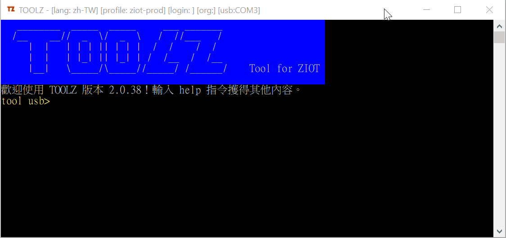

預設指令
2019-12-04
Toolz 命令 vs 預設指令
兩者的分別是
- toolz 命令 (Command) 是在
tool.exe中執行 -
預設指令 (Preset Command) 是在 Basebox 中執行
-
toolz 命令 是
tool.exe能理解的東西 - 預設指令 是 Basebox 能理解的東西
Basebox 目前能理解的及可以隨時執行的是 - 腳本語言 Lua 的代碼
cmd 是做什麼
簡單來說:
toolz 命令 cmd - 它只是一個收發器。
cmd 其實就是把 Lua 腳本代碼，通過 usb 發送給 Basebox 執行，並同時把 Basebox 運行中的輸出接收並顯示在 toolz 中。
例子: cmd 執行 Lua 腳本代碼
Lua 代碼:
local p,x = print,(" "..string.rep("-",30));p("\n\n");p(x);p(" Lua is a programming language");p(x);p();
當你把上列的 Lua 代碼貼到 toolz 命令 cmd 的後面，再按回車。你應該會看到以下的輸出:
執行輸入的程式指令: local p,x = print,(" "..string.rep("-",30));p("\n\n");p(x);p(" Lua is a programming language");p(x);p(); ------------------------------ Lua is a programming language ------------------------------
作為開發者，在開發 及 debug 時，cmd 方法比以往更新程式檔案更方便。
跟著要考慮的問題是:
- toolz 的使用者不一定都會 Lua
- 如果腳本稍長，Lua 的使用者也會有不便
- 不利代碼重用
- 如果下個 Basebox 版本在處理同一件事上代碼需稍有不同 ?
- 如果下個 Basebox 型號的腳本引擎改為
JavaScript?
預設指令
預設指令 就是為一段 Lua 腳本代碼 已起的 代號 或 名字 。
例如，我們可以把上一段的 Lua 腳本，起名為 cx-dummy。於是我們只需
tool usb> cmd cx-dummy
預設指令是存放在 toolz 的配置檔 config.json 中的。1
你可以直接用 cmd 列出所有預設指令。
tool usb> cmd
常用的預設指令有 auto, stop-auto, chipid, files, format, restart
你亦可以定義自己常用預設指令。建議你為你的預設指令命名是加上前綴 cx, cx- 或 cx_。
例子
我們看看以下的例子來了解一下預設指令。
Basebox 的物理機號
Basebox 的 物理機號 是方便一般用戶對 Basebox 的識別及呼叫的編號。在正常的情況下，物理機號是直接從 Basebox 的 MCU (微控制器/單晶片/單片機 ) 中的某個 ID 取出。
下圖是一個 Basebox 的標籤的例子，你可以看到標籤上也印有 物理機號。
如果你目前手上有一個 Basebox ，你如何知道上圖的標籤是否就是你手上的 Basebox ?
方法是把你手上的 Basebox 以 usb 連接上 toolz，執行以下預設指令
tool usb> cmd chipid
動畫: cmd chipid

從動畫中看到執行後返回 3220583，這就是手上的 Basebox 的物理機號。它與標籤上的是不同。